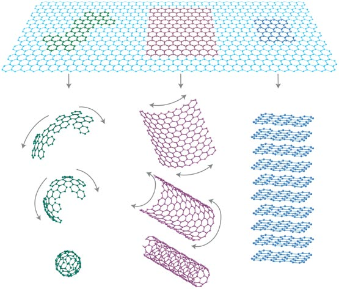

First-Principles Investigation of Interfacial Properties of Boron-Nitride Nanotubes and their Derivatives
Michigan Tech PhD. Defense
by Kevin Waters Follow along @ kwaters4.github.io/Presentation/Defense/
My Background
- Computational "Physicist"
- Materials modeling using first principles methods
- At Michigan Tech. working with Ravindra Pandey
- Summer at the Air Force Research Laboratory with Ruth Pachter
- DOE Fellwoship at PNNL working on theory and NWChem


Hypothesis
Nanomaterials
Materials with at least one dimension in the sub-micron range.
- Ratio of surface to bulk atoms changes
- Bulk properties are not present at this scale
- Adding one atom changes the properties of the material
- Large configuration spaces to search
- Prediction can be utilized, but caution should be practiced
Examples of Nanomaterials
- Clusters
- Nanoparticles
- Fullerenes
- Nanotubes
- 2D-Materials

Boron Nitride Nanotubes
- Predicted in 1994
- Synthesized in 1995
- Typically considred a wide band gap semiconductor
- Parameters to consider
- Chirality (n,n), (n,0), (n,m)
- Diameter
- Layers
- Excellent chemical and thermal stability
Boron Nitride Nanotubes

Difference between Carbon and Boron Nitride Nanomaterials
- Semi-ionic bonds (B-N) versus covalent (C-C)
- Interlayer interactions are stronger
- BNNTs are mostly zig-zag, CNTs statistcally equivalent.
- All BNNTs are semi-conducting, CNTs vary based on chirality
- Cytotoxicity still being investigated for BNNTs
Boron Nitride Nanotubes (Band Gap)


Biological Molecules
- Carbohydrates
- DNA (Nucleotides)
- Lipids
- Proteins (Amino Acids, Peptides)
- etc.
Methods and Tools
- Solving the system's electronic wavefunction
- Schrödinger Equation
- Density Functional Theory (DFT)
- Ab Initio Molecular Dynamics (AIMD)
- High Performance Computing Platform
Amino Acids Conjugated with Boron Nitride Nanomaterials
Proteins


Conjugated Structures

Binding Energies

Solvent effects on Boron Nitride using Ab Intio Molecular Dynamics (AIMD)
Gold Deposition on Boron Nitride Nanomaterials
Gold Quantum Dots on Boron Nitride

Boron Nitride Nanotubes Functionalized with Gold Quantum Dots
Gold Flakes on Boron Nitride

Gold Flakes on Boron Nitride

Unpublished work from Bhandari et. al.
Gold Cluster Structures
| 2D | 3D |
|---|---|
 |
 |
Gold Cluster Cohesive Energy

Gold Clusters on BN
- Substrate of h-BN
- vDW Interactions
- Deformation for 3D clusters
Gold/BN Binding Energies

Gold Cluster Electronic Gap

Conjugated Gold Cluster Electronic Gap

Mechanical Properties of 2D BN2
Experimental Functionalization

BN Electronic Structure Evolution
| Coverage (%) | Band Gap (eV) | Binding Energy (eV) |
|---|---|---|
| 0 | 4.25 | |
| 16 | 3.34 | -0.74 |
| 25 | 3.11 | -0.70 |
| 50 | 2.25 | 0.72 |
BN2 Monolayer
- Supercell : 2B + 4N
- Symmetry : Amm2 (38)
- Lattice Vectors
- a : 6.84 Å
- b : 2.55 Å
- Bonds
- N-N : 1.29 Å
- N-B : 1.34 Å
- B-N : 1.50 Å
- Stability : Phonon Spectra
BN2 Band Structure (Orbital Projected)

Hooke's Law / Elastic Tensor
- σI is the stress tensor
- CIJ is the elastic tensor
- ηJ is the stain tensor
Orthorhombic Symmetry in 2D
Results
| N/m | Graphene1 | This Work | BN2 | This Work | |
|---|---|---|---|---|---|
| C11 | 358.1 | 353.7 | 293.2 | 290.5 | |
| C12 | 60.4 | 61.7 | 66.1 | 64.4 | |
| C22 | |||||
| C66 | 148.9 | 144.9 | 113.5 | 113.1 |
Results
| N/m | Graphene1 | BN2 | BN2 |
|---|---|---|---|
| C11 | 358.1 | 293.2 | 368.8 |
| C12 | 60.4 | 66.1 | 47.2 |
| C22 | 153.3 | ||
| C66 | 148.9 | 113.5 | 58.7 |
Exact Exchange (Theory Development)
Current/Future Work
- Improve accuracy for the exact exchange integral in PBC (NWChem)
- AIMD studies on the peptide/BNNTs interface in a solvated environment
- Test plane-wave AIMD simulations with O(N) DFT methods

Challenges
- Computation power (Hardware/Software)
- Scaling of theories (CCSD vs. DFT vs. MD)
- Inclusion of all releveant parameters (ions, solution, pH, etc.)
- Asking the right questions
Conclusion
- Laid the foundation for protein BNNT simulations
- Started to investigate functionalized structures
- Building framework for future large scale applications
- Flexibility to look at similar structures (e.g. Polymers)
Acknowledgements
- Ravindra Pandey
- Eric Bylasksa
- Gregory Odegard
- Nabanita Saikia
- Max Seel
- Wil Slough
- Yoke Khin Yap